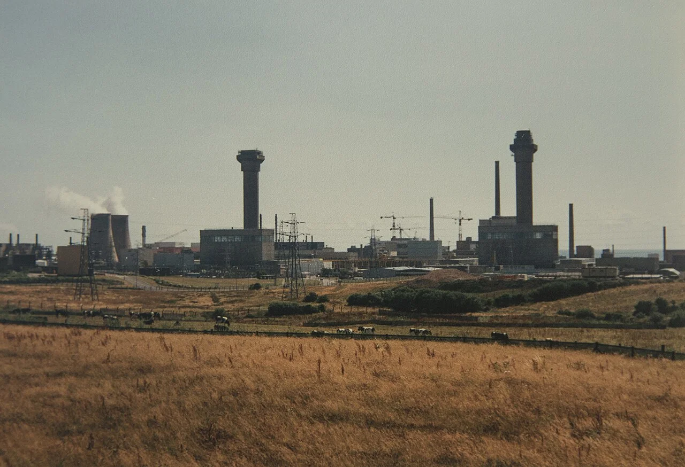
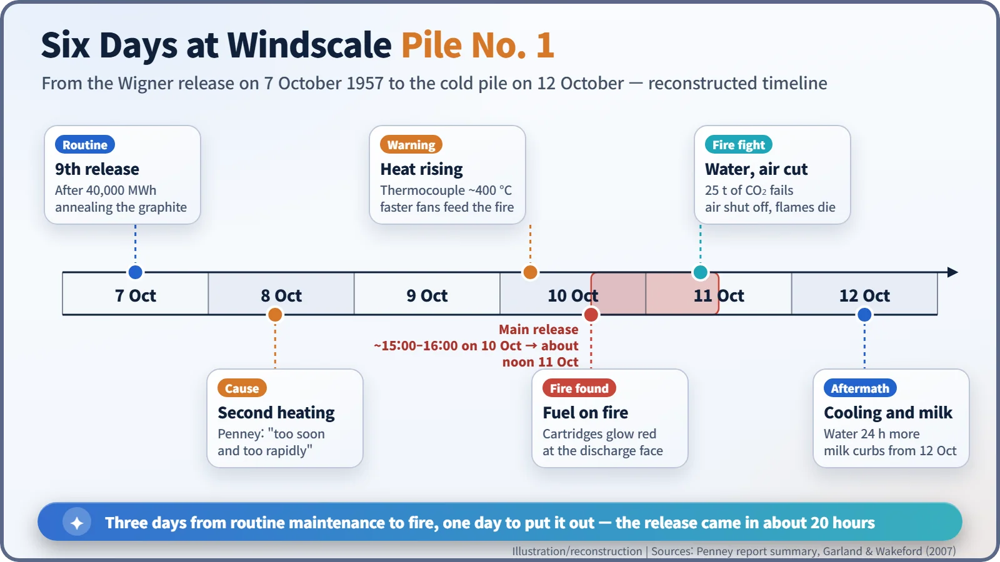
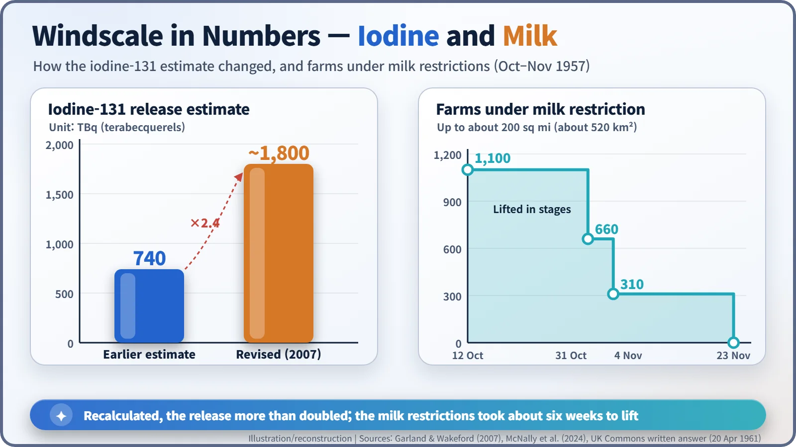

Nuclear History · 184
The Autumn the Milk Went to Sea — the Windscale Fire of 1957 and an Iodine Figure That Had to Be Recalculated
A maintenance job on a British plutonium reactor became a fire, the milk from 1,100 farms was held back, and decades later the iodine figure was recalculated at more than double.
On 10 October 1957 a routine maintenance job turned into a fire inside Windscale Pile No. 1, a British military reactor making plutonium on the Cumbrian coast. It took water and a decision to cut off the air to put it out; milk from up to about 200 square miles was restricted for about six weeks, and the estimate of the iodine-131 released was later revised from about 740 to about 1,800 terabecquerels.
The milk that went to sea
In mid-October 1957, dairy farmers along the Cumberland coast of north-west England were told to do something that made no sense on the face of it: pour away perfectly fresh milk. It was diluted and sent out to sea. The cows were healthy and grazing as usual. The trouble was an invisible visitor that had settled on the grass: radioactive iodine. A few days earlier, a reactor had caught fire at the coastal nuclear site of Windscale, known today as Sellafield.

A routine job: letting the graphite relax
The fire broke out in Windscale Pile No. 1. "Pile" was the early name for a reactor built by stacking blocks of graphite. This one was not a power station. It was a military reactor making plutonium for Britain's nuclear weapons, cooled by fans that pushed air through the core and up a tall chimney. Under pressure to build a hydrogen bomb, Britain was also using it to make tritium.
Graphite reactors of this kind had a peculiar chore. When graphite is bombarded with neutrons for a long time, its crystal structure is knocked slightly out of place and it stores energy, known as Wigner energy. Like a compressed spring, that energy can be released suddenly and drive the graphite temperature up. So operators periodically warmed the reactor on purpose to coax the energy out gently, a procedure called annealing, or a Wigner release.
On 7 October 1957, with Pile No. 1 at 40,000 megawatt-hours of accumulated operation, the ninth Wigner release began. [1]
"Too soon and too rapidly"
After the first heating, temperatures fell almost everywhere except in one channel, where they kept rising. Concluding that the energy had not fully come out, the operators applied a second nuclear heating on 8 October. The official inquiry later named this as the primary cause: the second heating had been applied "too soon and too rapidly."
Early on 10 October a temperature reading refused to fall and climbed to about 400 °C. To cool things down, the operators sped up the fans, which in effect fed the fire with oxygen. Uranium metal inside the fuel cartridges was burning. Monitors on the chimney detected a release, and the deputy general manager in charge of the reactors, Tom Tuohy (1917–2008), went up to the top of the reactor and saw for himself fuel glowing red hot. [1]

The last resort: water
Attempts to push burning fuel out with steel poles failed. Twenty-five tonnes of liquid carbon dioxide, brought over from the neighbouring Calder Hall station, made no difference. In the early hours of 11 October, at its worst, about 11 tonnes of uranium were reported to be on fire.
That left water, a frightening option, since water on hot metal can produce hydrogen and risk an explosion. On the morning of 11 October, about a dozen hoses were fed into the pile, but the fire did not give up easily. Tuohy cleared the building and shut off all the air flowing into the reactor, and only then did the flames die away. Water kept flowing for another 24 hours until the pile was cold. No one living nearby was evacuated. [1]
From grass to cows to milk
Most of the radioactivity escaped in about 20 hours, from roughly 3–4 p.m. on 10 October until around noon the next day. The main worry was iodine-131. With a half-life of about eight days it does not linger, but it settles on pasture, cows eat the grass, and through milk it concentrates in children's thyroid glands. [2]
From 12 October the government stopped milk leaving the area. According to a 1961 answer in the House of Commons, the restricted zone covered at most about 200 square miles (about 520 km²) and 1,100 farms. The restrictions were lifted in three stages from 31 October, the last on 23 November, so they lasted about six weeks rather than the "about a month" often quoted. [4]
The size of the release itself has been revised. For years the iodine-131 figure was given as about 740 terabecquerels (TBq). In 2007, Garland and Wakeford re-examined the weather records and environmental measurements and put it at about 1,800 TBq, more than double. The filters at the top of the chimney, once mocked as "Cockcroft's Folly," are estimated to have caught about 95% of the radioactive dust. [2] [6]

A report in two weeks, the full text in 30 years
A board of inquiry chaired by William Penney (1909–1991) sat from 17 to 25 October and delivered its report on 26 October. But Prime Minister Harold Macmillan's government did not publish it in full; in November it put a summary White Paper before Parliament. The usual explanation is concern for public confidence and for nuclear cooperation with the United States. The White Paper attributed the accident to inadequate instrumentation and errors of judgement by operators, rooted in weaknesses of organisation. The full report was released only in January 1988. [5] [1]
Both piles were shut down for good. Fire-damaged fuel still sits inside Pile No. 1, and decommissioning continues. The accident was later rated, retrospectively, at Level 5 on the International Nuclear and Radiological Event Scale (INES). [6]
Health effects: two kinds of number
When it comes to health, there are two kinds of figures. The first are model estimates. A 1988 government report suggested that about 100 cancer deaths might "probably" occur over 40–50 years, and after the 2007 reassessment press reports put the estimated number of cancers at about 240. These are calculations, multiplying the population's collective dose by risk coefficients; they are not counts of actual patients.
The second is epidemiology. In 2024 a team led by McNally followed about 56,000 people born in Cumbria in 1950–1958 and about 137,000 born later, up to 2020, and found no detectable increase in thyroid cancer. The UK's Committee on Medical Aspects of Radiation in the Environment (COMARE) welcomed the finding and pointed to the limits of predicting risk by adding up small doses across large numbers of people. The two numbers answer different questions, and both are worth keeping in mind. [2] [3]